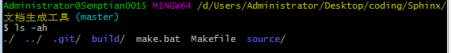
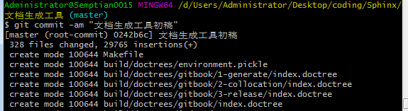
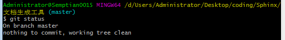

本地仓库搭建¶
git下载安装¶
- window下载安装
- 官网下载 [国内直接从官网下载比较困难，有时需要翻墙]
- github仓库下载
- linux下载安装
- Mac下载安装
初始化仓库¶
window下命令行工具也有很多，比较推荐的是
- Git Bash[安装git后自带的bash环境，支持shell命令]
- Cmder [window上的命令行神器]
在这里我们使用 git bash
切换到文档主目录[Makefile文件所在目录]，点击鼠标右键，选择Git Bash Here，使用git自带bash环境，输入 git init 命令初始化仓库

这时Git就把仓库建好了，而且告诉你是一个空的仓库 empty Git repository ，可以发现当前目录下多了一个 .git 的文件夹，这个目录是Git来跟踪管理版本库的，没事千万不要手动修改这个目录里面的文件，否则就把Git仓库给破坏了。如果你没有看到 .git 文件夹，那是因为这个目录默认是隐藏的，用 ls -ah 命令就可以看见隐藏的 .git 文件夹

提交本地仓库¶
- 初始化仓库后，我们需要将目录下所有文件进行版本控制，输入
git add --all将当前目录下所有文件加入到版本控制中；之后可以使用git status命令查看当前版本控制状态，确认是否将所有文件都添加到版本控制当中

- 确认所有文件都添加到版本控制中后，使用
git commit -am "<message>"命令将当前所有版本控制的文件[即上图红框标注的待commit的文件]commit提交到本地git仓库中

- 再使用
git status命令查看当前版本控制状态，确认没有待commit的文件，working工作区完整clean
